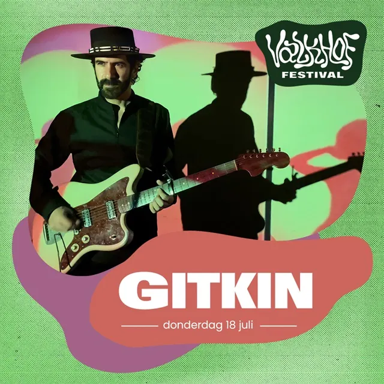
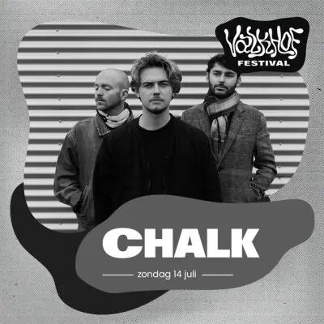

Nieuws ·
Valkhof Festival 2024: de onthulling van de eerste namen

De eerste 24 namen van Valkhof Festival 2024 illustreren waarom het festival ook een nieuwe look verdient: aan het recept verandert er niets, maar de muziek blijft in sneltempo evolueren. Net zoals in de afgelopen twee edities heeft Valkhof Festival de ambitie om een staalkaart te presenteren van alles wat (pop)muziek in 2024 te bieden heeft

Valkhof Festival is inmiddels zoveel meer geworden dan ‘bandjes kijken’, het is een ongeëvenaard toegankelijke ontdekkingstocht en de nieuwe stijl wil dat zo goed mogelijk uitdrukken. Onze bezoeker wordt uitgenodigd om in een jungle van frisse, nieuwe en/of onbekende muziek te stappen en de grote namen van morgen vandaag al te ervaren.
De showcase-functie van Valkhof Festival blijft dan ook onverminderd belangrijk. Ook in 2024 is de line-up doorspekt van acts op de rand van een doorbraak, eerste Nederlandse shows ooit, lokaal en regionaal talent én muziek die zelden of nooit aan bod komt op traditionele festivals
De line-up ontdekken kan hier, het volledige rijtje eerste namen staat hieronder opgesomd.